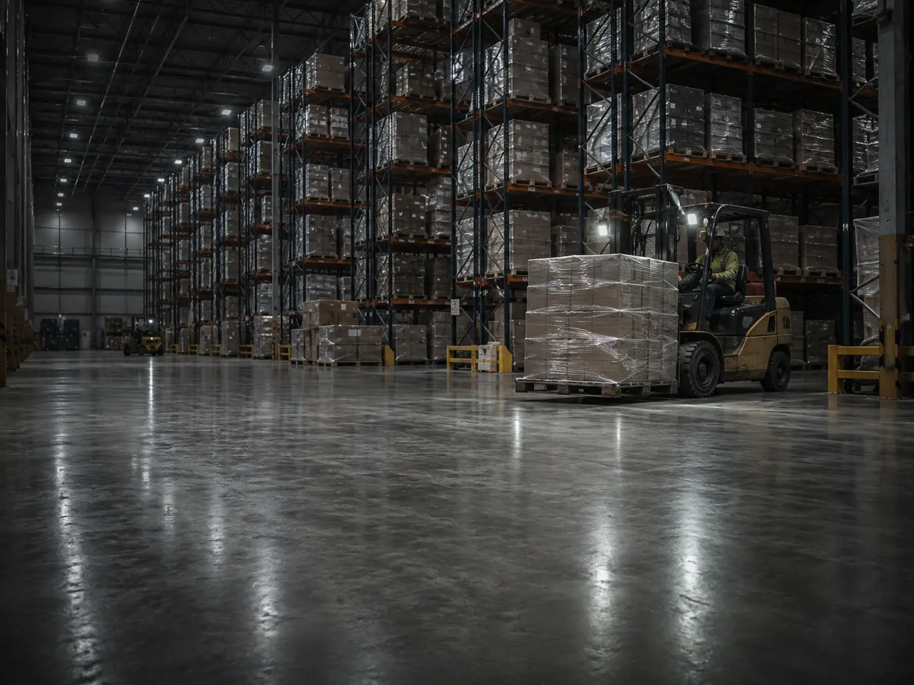
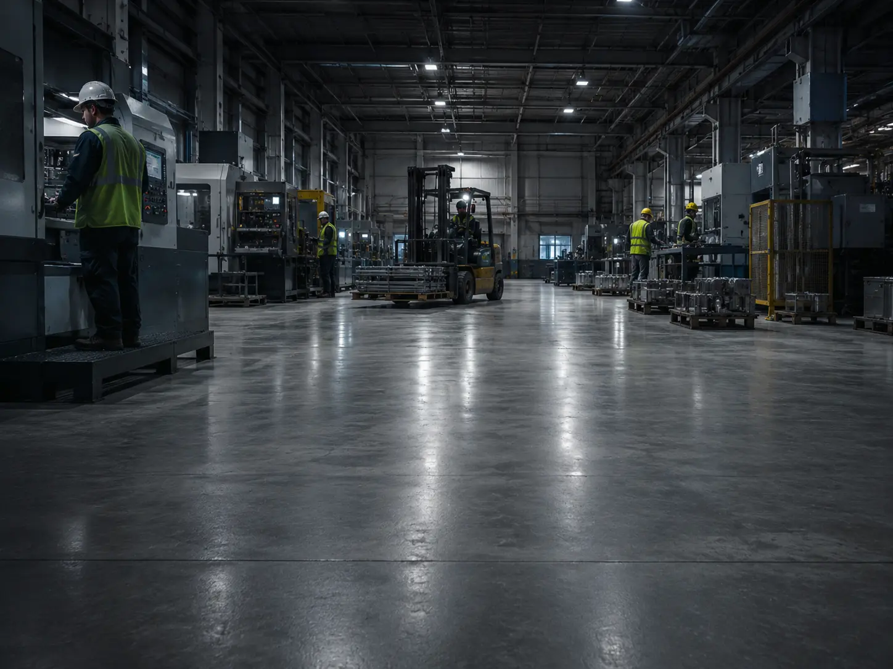
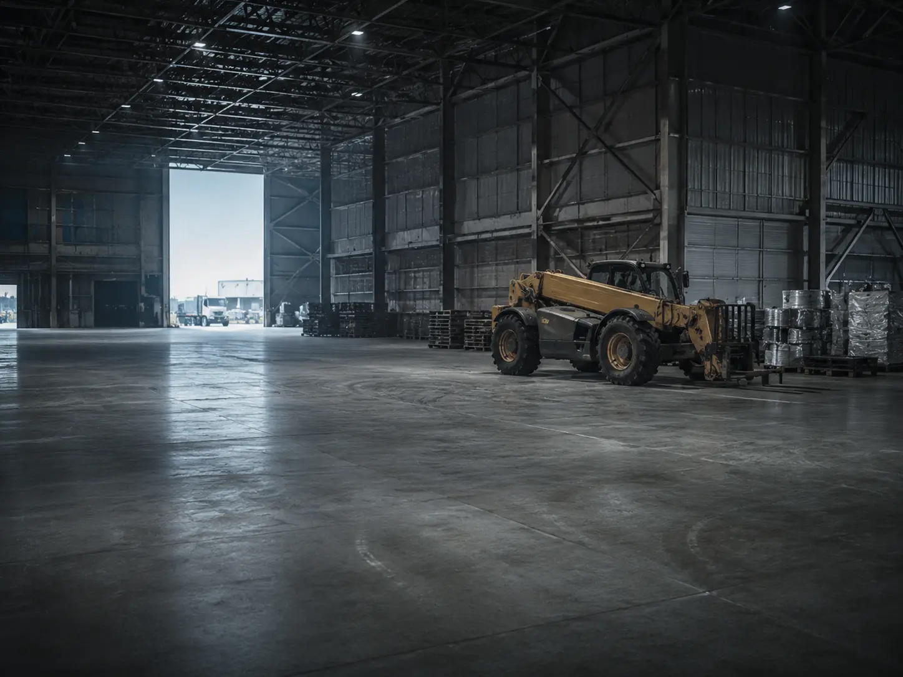
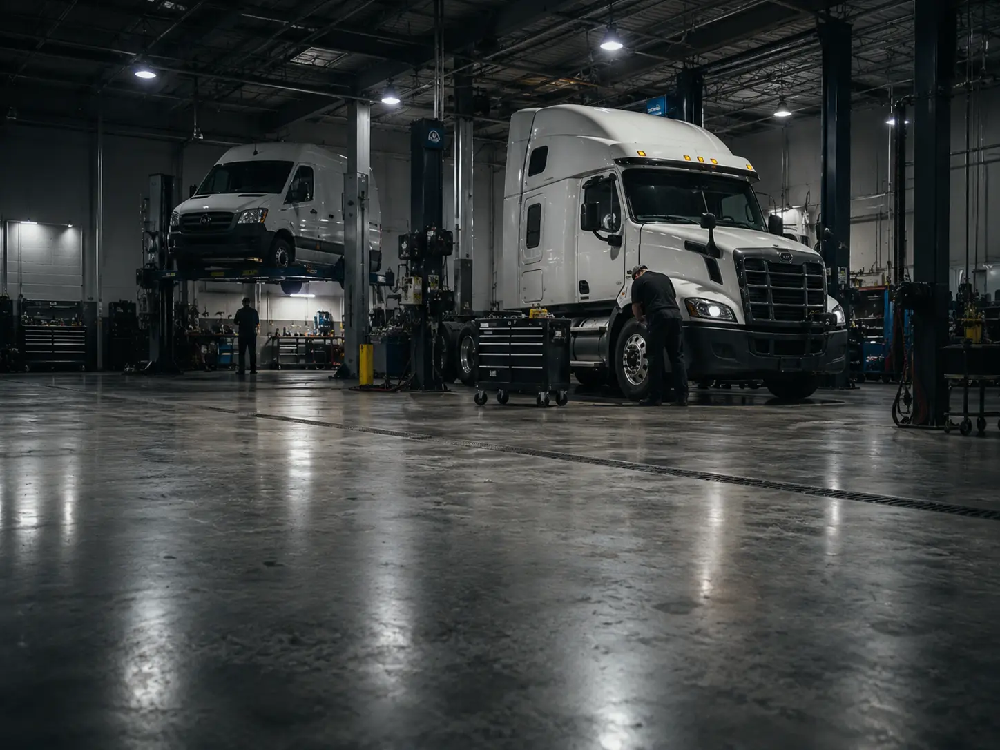
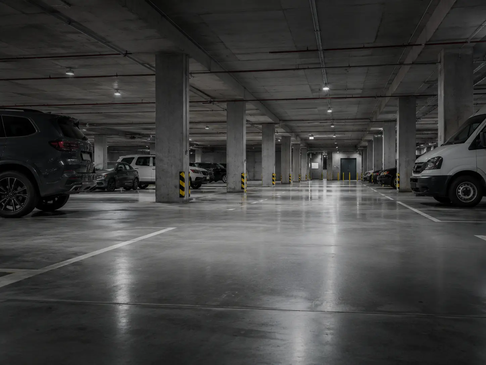
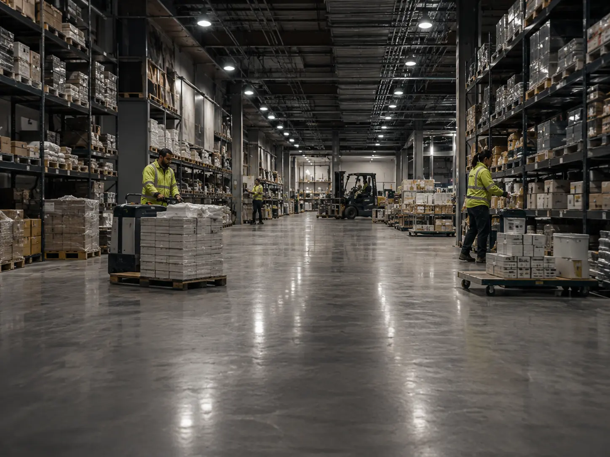
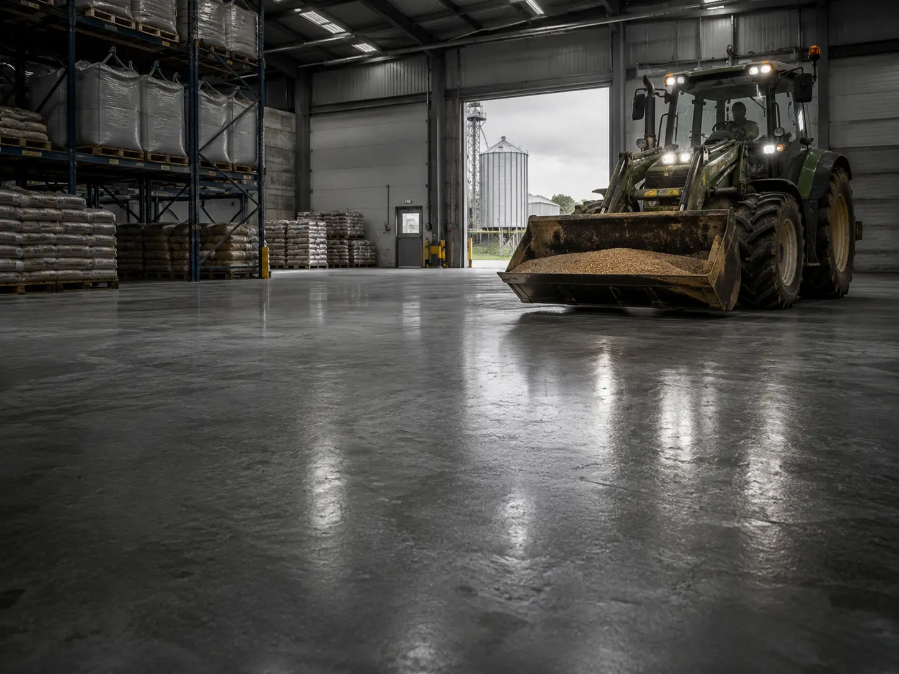
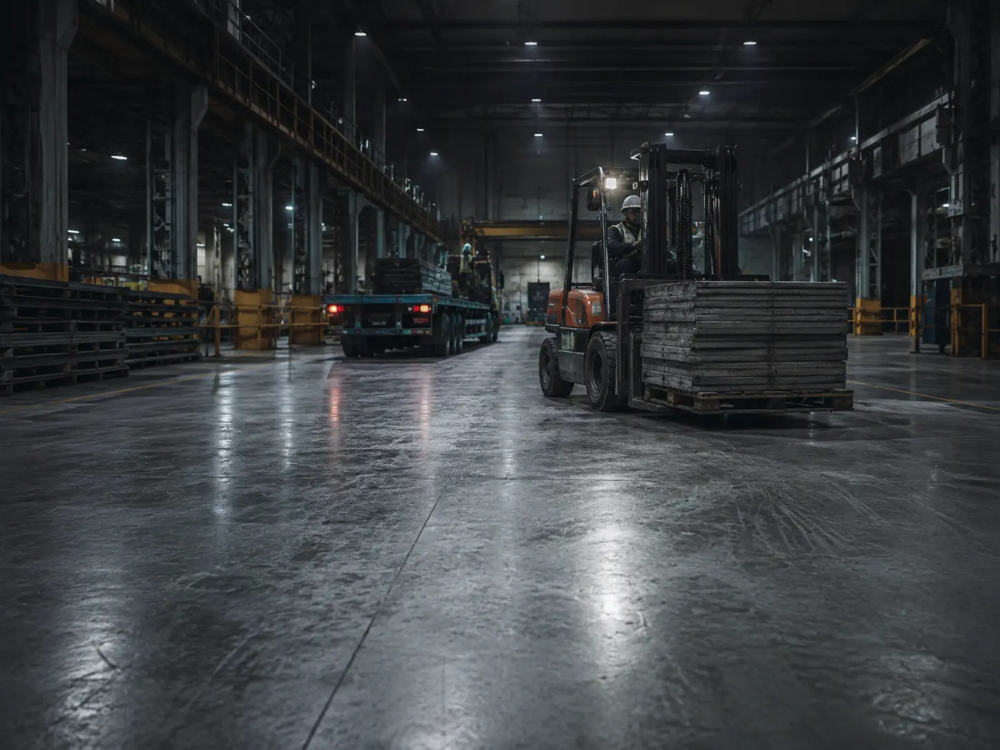
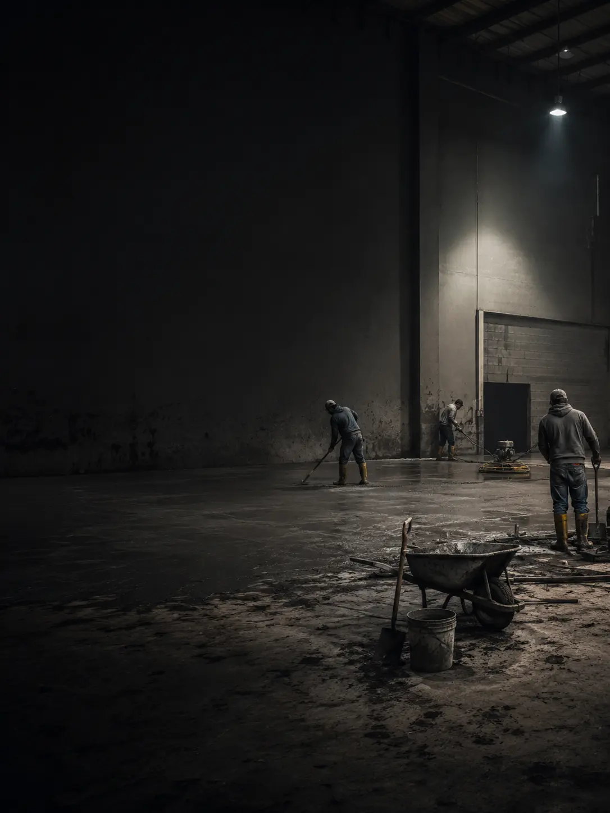
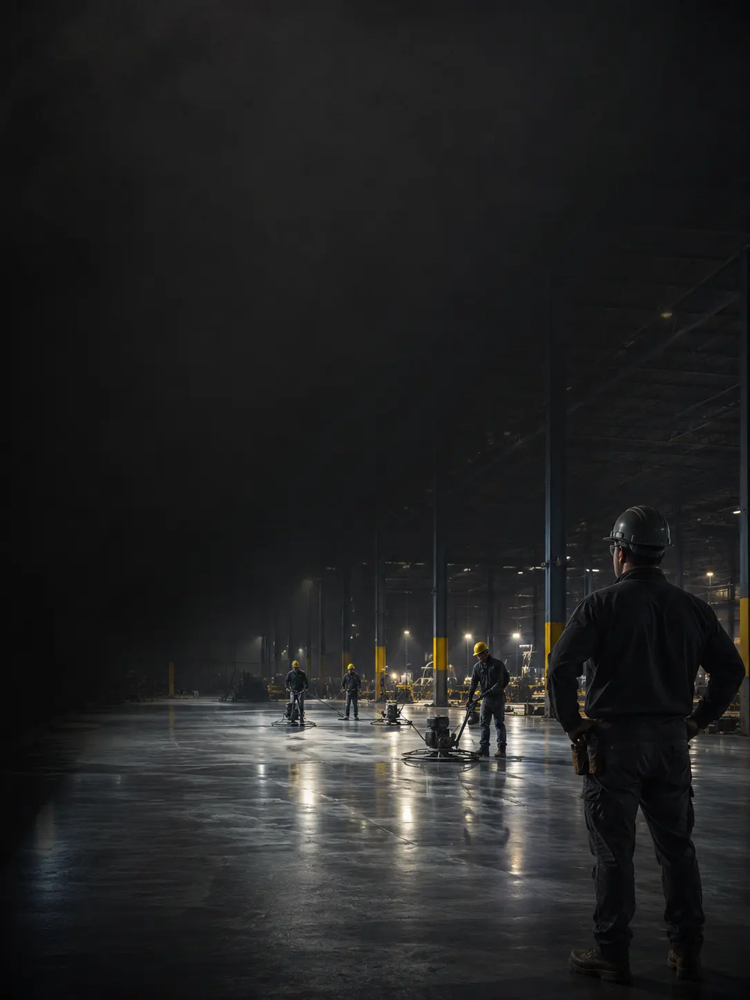

Склады и логистические комплексы
Полы под стеллажи, погрузчики и интенсивные проезды.

Промышленные и коммерческие объекты
Устройство бетонных полов для складов, производственных цехов, ангаров, СТО, паркингов и коммерческих помещений.
Подготовка основания, армирование, бетонирование, топпинг, машинная затирка и устройство деформационных швов.
Мы не отдельная бригада, которая отвечает только за заливку. ТопАгроБел — крупная строительная организация, которая рассматривает промышленный пол как часть всего объекта.
Учитываем будущие нагрузки, монтаж оборудования, стеллажей, перегородок и инженерных коммуникаций. Организуем материалы, технику и работу специалистов так, чтобы каждый следующий этап строительства не повредил готовый пол.
Подбираем конструкцию промышленного пола с учётом назначения помещения, техники, нагрузок и состояния основания.

Полы под стеллажи, погрузчики и интенсивные проезды.

Покрытия под оборудование, станки и технологические зоны.

Ровные промышленные поверхности для техники и хранения.

Износостойкие полы для зон ремонта и заезда транспорта.

Покрытия с учётом движения и разметки машиномест.

Основания и покрытия для коммерческих площадей.

Полы для складов, ферм и хозяйственных помещений.

Плиты и покрытия под открытую и закрытую эксплуатацию.
Конструкция пола зависит от нагрузок, состояния основания, движения техники, стеллажей, оборудования, температурного режима и условий эксплуатации.
Укажите параметры объекта. Мы предложим состав работ и подготовим ориентировочный расчёт стоимости.
Видеоотзывы представителей компаний, для которых мы выполнили устройство промышленных бетонных полов.

Отзыв будет добавлен после съёмки.

Отзыв будет добавлен после съёмки.

Отзыв будет добавлен после съёмки.

Отзыв будет добавлен после съёмки.
Промышленный пол — часть всего строительного объекта. Поэтому важно выбрать подрядчика, который отвечает не только за заливку бетона, но и понимает, как пол будет взаимодействовать с оборудованием, инженерными системами и последующими этапами работ.

Частные бригады и небольшие подрядчики часто дают минимальную гарантию и не всегда остаются на связи после завершения объекта.
Подрядчик отвечает только за заливку пола и может не учитывать монтаж перегородок, оборудования, инженерных сетей и другие строительные этапы.
Текучка кадров и привлечение временных специалистов затрудняют контроль качества и соблюдение технологии на всех этапах.
Не всегда понятно, от какого поставщика доставлен бетон, соответствует ли он заявленному классу и предоставляются ли документы на материал.
Небольшой подрядчик часто ориентируется на доступность своей бригады, а не на производственный график и процессы заказчика.

ТопАгроБел выполняет промышленные и коммерческие строительные работы и отвечает не только за отдельный этап, но и за общий результат на объекте.
Заранее учитываем монтаж оборудования, перегородок, инженерных коммуникаций и последующие работы, которые могут повлиять на готовый пол.
На объектах работает сложившаяся команда специалистов с понятным распределением ответственности и контролем каждого технологического этапа.
Используем бетон согласованного класса от надёжных производителей. На материалы предоставляются необходимые документы.
Согласовываем этапы и время выполнения работ с графиком производства, логистикой объекта и требованиями заказчика.
ООО «ТопАгроБел»
Олег Олегович: +375 (29) 128-62-17
Святослав Робертович: +375 (29) 658-29-50
Email: info@topagrobel.by
Минск и вся РБ
Режим работы: пн–пт 09:00–18:00